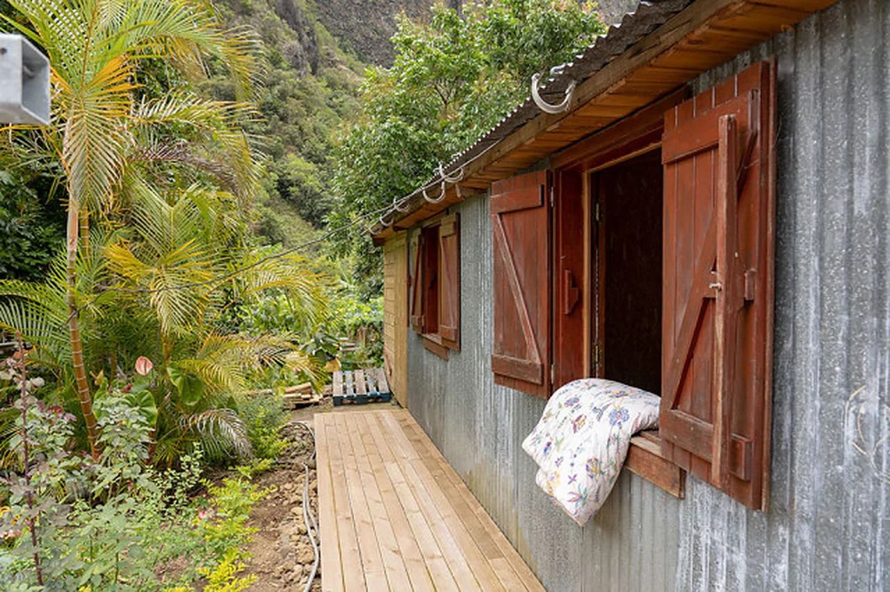
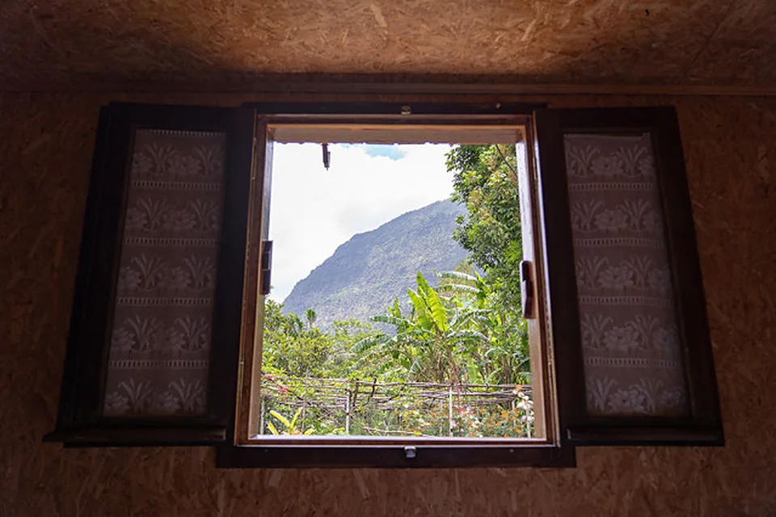
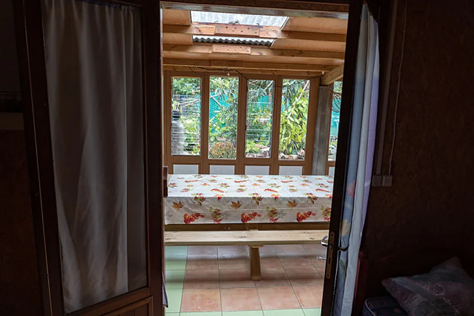
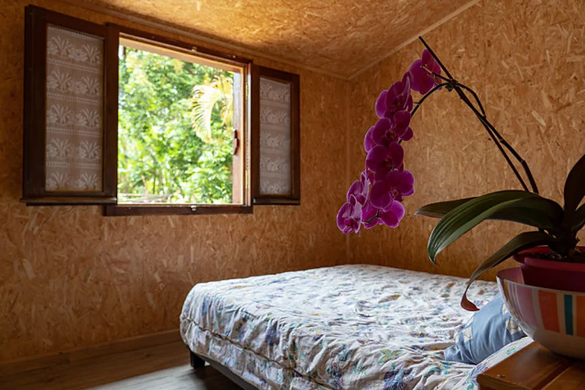
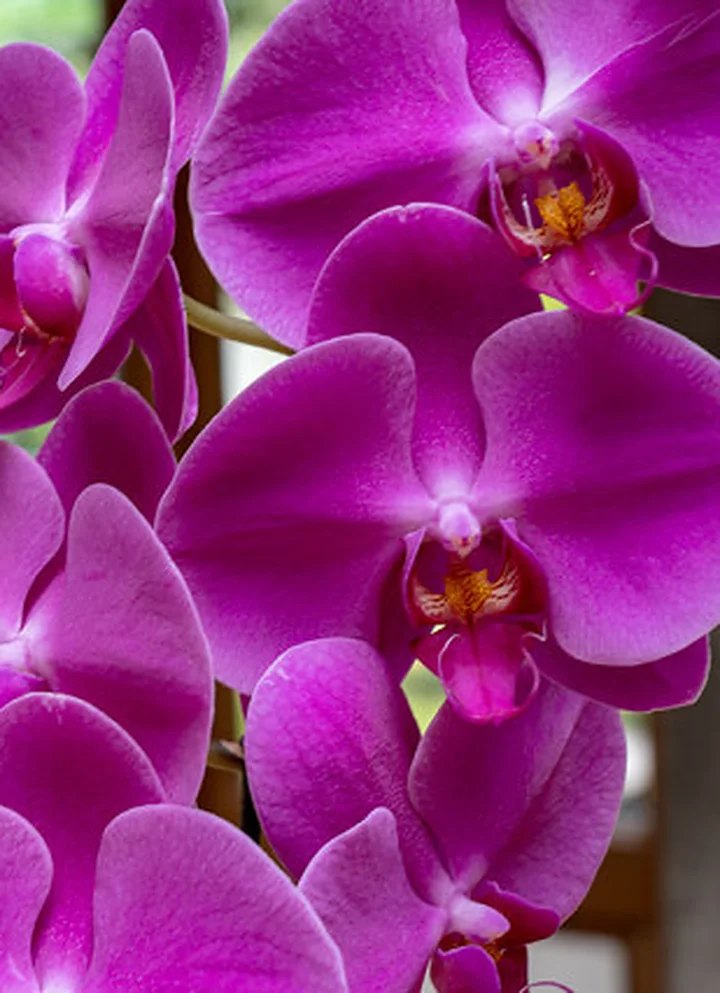

Grand Bassin · La Plaine des Cafres · Le Tampon
Gîte La Cascade
Chambre & table d'hôtes · chez Marie-Hélène Nativel
Au fond de la vallée de Grand Bassin : une case aux portes rouges, une cuisine péï, le calme et la nature tout autour.
Grand Bassin · 97418 La Plaine des Cafres · Le Tampon
Chambre & table d'hôtes
La simplicité d'un village des Hauts
« À l'écart du village, la chambre et table d'hôte La Cascade permet de découvrir l'authenticité et la simplicité des villageois de Grand Bassin. »
Marie-Hélène Nativel et sa famille vous ouvrent leur maison : une étape chaleureuse après la descente dans la vallée, une table servie le soir, une nuit au calme et le petit-déjeuner avant de reprendre le sentier.
Une voyageuse le résume ainsi : « le gîte est juste au-dessus du chemin qui mène à la cascade ».
« Cuisine péï, calme, nature. »la devise du gîte, sur sa page Facebook

Dormir à La Cascade
Des chambres lumineuses, ouvertes sur le jardin
En couple, en famille ou en groupe de marcheurs, chacun trouve sa place : quatre chambres doubles et un dortoir de onze places, avec des sanitaires partagés.



La table d'hôtes
Le soir, un vrai repas réunionnais
La nuit se prend en demi-pension : le repas du soir et le petit-déjeuner font partie du séjour. Les voyageurs en parlent encore :
« On mange les produits locaux et c'est un délice, et je ne parle pas du rhum litchis !!! »
Florence, avis Google, séjour de juin 2025Grand Bassin
Au bout du sentier, la vallée
Grand Bassin, c'est un village blotti au creux des remparts de la Plaine des Cafres, que l'on rejoint à pied. Le gîte en est une porte d'entrée idéale : montagne, village et grands espaces.
- Le chemin de la cascade, juste en contrebas du gîte.
- Sentiers de randonnée et de grande randonnée tout autour.
- Points de vue panoramiques sur les remparts.
- Équitation dans les environs.
Ils sont passés par ici
Un accueil dont on se souvient
Facebook · 13 avis
Nous avons été accueillis avec beaucoup de gentillesse et de simplicité. Nous avons dégusté un délicieux repas typique réunionnais.Charlotte, séjour de janvier 2025 · Google
Repas copieux et bon, mention spéciale pour le baba figue, p'tit punch letchis.Mélissa · Google
Le bonjour à Mme Nativel qui m'a accompagnée à la cascade quand la rivière ronflait bien, et je garde un super souvenir de son accueil !Marie Paule · commentaire sur la page Facebook du gîte
Tarifs 2026
Le dîner, la nuit, le petit-déjeuner
Tarifs 2026 publiés sur la fiche reunion.fr du gîte. Pour réserver une chambre ou des places en dortoir, un appel ou un message au 0692 28 59 12.
Offrir pour Noël
Offrez une nuit à Grand Bassin
La descente dans la vallée, un repas péï, une nuit au calme près de la cascade : écrivez au gîte pour offrir un séjour à un proche ou réserver vos nuits pendant les fêtes.
Illustration : carte à offrir
Venir au gîte
Réservez votre nuit dans la vallée
Grand Bassin se rejoint à pied depuis la Plaine des Cafres. Prévenez Marie-Hélène de votre arrivée : la table et les chambres vous attendent.
- Téléphone & WhatsApp
- 0692 28 59 12
- Formule
- Chambre & table d'hôtes · demi-pension · 19 places